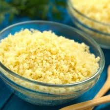

Couscous

Description
Couscous is the best! It is fast and tastes great. This recipe is savory and goes great with chicken.
Ingredients
- 1 cup couscous
- 1 cup boiling water
- 3 tablespoons olive oil
- 1 clove garlic, minced
- 1/4 cup diced red bell pepper
- 4 green onions, sliced
- 1 cup cherry tomatoes
- 1 cup fresh basil leaves
- 1 pinch salt
- 1 pinch ground black pepper
- 1 dash balsamic vinegar
- 1/4 cup grated parmesan cheese
Directions
- Preheat oven to 350 degrees F (175 degrees C).
- Stir couscous into boiling water and return water to a boil. Cover and remove pot from heat. Let stand 5 minutes, then fluff with a fork.
- While the couscous is cooking, heat oil in a large skillet over medium heat. Stir in garlic, green onions and peppers; saute briefly. Stir in tomatoes, basil, cooked couscous, salt and pepper. Mix together and transfer to a 1 1/2 quart casserole dish. Splash some balsamic vinegar on top.
- Bake in a preheated 350 degrees F (175 degrees C) oven for 20 minutes. Sprinkle with Parmesan cheese while still warm.